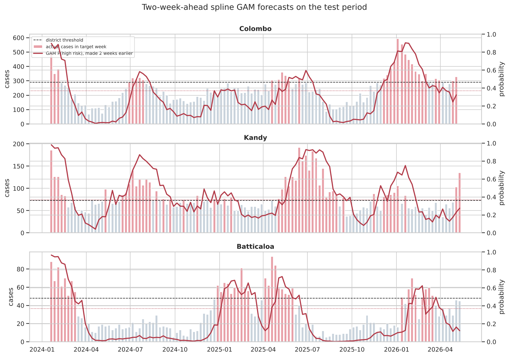
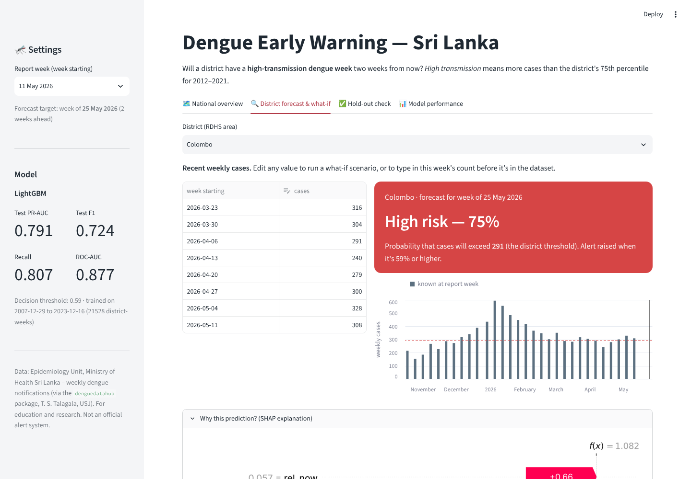

Two-week-ahead prediction of high-transmission dengue weeks with LightGBM, explained with SHAP and LIME
Summary. Using 20 years of official weekly dengue notifications for all 26 Sri Lankan health areas (Epidemiology Unit, Ministry of Health), I built a classifier that, at the end of each week, predicts whether a district’s cases two weeks later will exceed that district’s own high-transmission threshold. After finding and fixing three hidden data-quality problems, I engineered 19 leakage-free, scale-free features and compared six tuned models under time-series cross-validation. The selected model, LightGBM (an algorithm not covered in lectures), reaches ROC-AUC 0.877, PR-AUC 0.791 and recall 0.807 on an untouched 2024–2026 test period, against PR-AUC 0.592 for a persistence baseline. SHAP and LIME show that the model relies on epidemiologically sensible signals. The model is served through a Streamlit app with per-prediction explanations, and retrained through an Azure ML / GitHub Actions MLOps pipeline.
Dengue is endemic in Sri Lanka and causes large, recurring epidemics. The dataset records 174,687 cases in 2017 and 70,918 in 2023. Regional Medical Officers of Health and Public Health Inspectors respond with vector control: fogging, larval-source reduction and community clean-up drives. These need lead time to mobilise staff, insecticide and communities. A district-level early warning that flags an approaching high-transmission week two weeks ahead (one week covers reporting delay, one week covers mobilisation) can help them act before cases peak.
The Epidemiology Unit publishes a Weekly Epidemiological Report (PDF, epid.gov.lk) listing notified dengue cases for each of the 26 RDHS areas (25 districts plus Kalmunai). The open-source denguedatahub package (Dr. T. S. Talagala, University of Sri Jayewardenepura; GPL-3) downloads these reports and extracts the tables. I exported its srilanka_weekly_data object to CSV. The data cover 23 Dec 2006 – 17 May 2026: 26,311 rows, with columns year, week, start.date, end.date, district, cases.
The target high_risk is 1 if the district’s cases in week t+2 exceed its 75th percentile of weekly cases over 2012–2021, so each district is judged on its own scale (150 cases is normal for Colombo, 15 is high for Mullaitivu). From the raw counts I engineered 19 features, all known at week t and all expressed as log ratios to the district threshold: current level and lags 1–3; 4/8/12/52-week averages; 1- and 4-week growth; 8-week volatility; last year’s level in the target week; a seasonal norm; sine/cosine of the target week; national growth; the share of districts already above threshold; and the district’s baseline burden.
The EDA showed (i) a hundred-fold difference in level between districts, (ii) monsoon seasonality with peaks in June–July and December–January, (iii) strong autocorrelation (lag-2 above 0.8), and (iv) a positive rate that shifts strongly between years. It also exposed three data-quality problems hidden behind a file with no missing values:
Real epidemic peaks were kept as genuine signal. Skew was handled with a log1p transform and threshold-relative features. Tree models need no scaling; logistic regression used a StandardScaler inside its pipeline. There are no categorical inputs to encode, because the district is represented by its baseline burden.
Ethical data use. The data are aggregate public counts per health area, with no names, addresses, ages or other personal data. No individual can be identified, and no consent issue arises.
LightGBM (Ke et al., 2017) is a gradient-boosted decision-tree method. It adds small trees sequentially, each fitted to the gradient of the loss of the current ensemble, and sums them to produce a probability. Its distinctive ideas are histogram-based splitting (features binned into ≤ 255 buckets, which makes training fast), leaf-wise (best-first) tree growth instead of level-wise growth, and optional sampling and feature bundling (GOSS, EFB) for large data.
| Property | Decision tree | Logistic regression | k-NN | Random Forest | LightGBM |
|---|---|---|---|---|---|
| Model form | one tree | linear in features | stored examples | deep trees, averaged | small trees, added sequentially |
| Non-linear thresholds | yes | no | yes | yes | yes |
| Feature interactions | yes | no | implicit | yes | yes, controlled by tree size |
| Needs scaling | no | yes | yes | no | no |
| Overfitting risk | high | low | depends on k | low | low with shrinkage and leaf limits |
| Class imbalance | weights | weights | poor | weights | tunable scale_pos_weight |
Why it was selected. The problem has threshold-like effects (risk jumps once a district nears its threshold), interactions between level, season and the national wave, strongly collinear lag features, and a positive rate that moves between 7% and 82% across years. LightGBM handles all of these without scaling, is fast enough for Bayesian tuning under time-series cross-validation (30 trials × 5 folds in under 2 minutes), supports exact TreeSHAP explanations, and achieved the best cross-validated PR-AUC. It was compared against Random Forest, XGBoost, CatBoost, logistic regression and a time-series stacking ensemble.
Because this is a time series, the split is chronological and purged: train 2007–2021 (18,850 rows), validation 2022–2023 (2,678), and test January 2024 – May 2026 (3,145), which was never used for any decision. Rows whose t+2 target crosses a boundary were removed. One additional data point (the latest Colombo week with a known outcome) was held out completely for the inference demonstration. Hyperparameters were tuned with Optuna (TPE) by maximising the mean PR-AUC over five expanding-window folds (validation years 2019–2023). The decision threshold was chosen to maximise F1 on the out-of-fold predictions.
| Model | Default CV PR-AUC | Tuned CV PR-AUC | Key tuned settings |
|---|---|---|---|
| LightGBM | 0.777 | 0.787 | num_leaves 4, min_child_samples 206, learning_rate 0.010, 500 trees, colsample 0.53, scale_pos_weight 2.8 |
| XGBoost | 0.754 | 0.786 | max_depth 4, learning_rate 0.013, 400 trees, subsample 0.68, gamma 0.83, scale_pos_weight 1.6 |
| Random Forest | 0.772 | 0.785 | 400 trees, max_depth 6, min_samples_leaf 13, max_features 0.5, max_samples 0.67 |
| CatBoost | 0.776 | 0.785 | depth 6, 600 iterations, learning_rate 0.024, l2_leaf_reg 5.5, balanced class weights |
| Logistic regression | 0.778 | 0.779 | C 0.22, L2 penalty, standardised inputs |
Tuning improved every model. For LightGBM, it chose many tiny, heavily shrunk trees: a low-variance configuration that generalises across epidemic and non-epidemic years.
Accuracy is misleading with imbalanced, shifting classes, so the main metric is PR-AUC (average precision for the high-risk class). ROC-AUC, F1, precision, recall, balanced accuracy and week-block bootstrap 95% confidence intervals are also reported.
| Test set (Jan 2024 – May 2026) | ROC-AUC | PR-AUC | F1 | Precision | Recall | Bal. acc. |
|---|---|---|---|---|---|---|
| LightGBM (selected) | 0.877 | 0.791 | 0.724 | 0.656 | 0.807 | 0.792 |
| Stacking (RF+XGB+LGBM+Cat → LR) | 0.888 | 0.816 | 0.743 | 0.660 | 0.850 | 0.810 |
| CatBoost | 0.887 | 0.813 | 0.737 | 0.696 | 0.783 | 0.802 |
| Random Forest | 0.882 | 0.805 | 0.731 | 0.655 | 0.826 | 0.799 |
| XGBoost | 0.882 | 0.803 | 0.735 | 0.667 | 0.817 | 0.802 |
| Logistic regression | 0.875 | 0.787 | 0.705 | 0.693 | 0.718 | 0.775 |
| Persistence baseline (next = now) | 0.772 | 0.592 | 0.700 | 0.695 | 0.706 | 0.772 |
| Seasonal naive (same week last year) | 0.585 | 0.394 | 0.472 | 0.442 | 0.506 | 0.585 |

What the results indicate. Every tuned model beats the naive baselines by a wide margin. LightGBM’s PR-AUC interval (0.753–0.827) doesn’t overlap the persistence interval (0.547–0.635), and it raises recall from 71% to 81%, so roughly one in three outbreak weeks missed by "next week is like this week" is now caught two weeks ahead. The tree models are statistically indistinguishable on test: their intervals overlap. Model selection followed a rule fixed before testing (best CV PR-AUC; prefer a single model unless stacking gains at least 0.005). This chose LightGBM. CatBoost and the stack are slightly ahead on test, but switching now would mean selecting on the test set. Probabilities are inflated by scale_pos_weight, so they are used as risk scores with a CV-chosen threshold of 0.59. The held-out Colombo week (27 Apr 2026; 300 cases) was predicted HIGH (P = 0.63). Two weeks later Colombo reported 308 cases against a threshold of 291, so the prediction was correct.



What the model has learned. SHAP shows that the forecast is driven mainly by this week’s level (mean |SHAP| 0.65) and the 4-week average (0.58) relative to the district threshold, followed by the share of districts already high (0.32), last week’s level (0.29), national 4-week growth (0.11) and the seasonal norm (0.10). Dependence plots show an S-shaped response: below about 40% of the threshold, the effect is a flat −0.5 log-odds. It rises steeply around the threshold and saturates above it, so the forecast is decided in the zone just below the threshold. District size and last year’s level add almost nothing once counts are scaled.
LIME was applied to the held-out point, a correctly forecast onset (Nuwara Eliya, June 2025) and a missed outbreak (Monaragala, March 2024, a borderline 12 vs 11 cases during a falling national trend). On the held-out point, LIME agrees with SHAP in sign on 8 of its top 10 features, and the same four core features appear across five random seeds, so the local explanations are stable.
Alignment with domain knowledge. These patterns match dengue epidemiology: transmission is persistent over weeks (vector and virus cycles), epidemics are nationwide and driven by circulating serotypes, and risk peaks after the south-west and north-east monsoons. The model reasons the way a surveillance epidemiologist would, which supports trust and makes its errors interpretable.
Limitations. There are no rainfall or temperature inputs (no open district-weekly series was available), so seasonality and national momentum stand in for weather. The 75th-percentile threshold is one of several reasonable definitions of “high transmission”. Probabilities are not calibrated. Much of the signal is short-term persistence, so outbreaks with no early signal in the counts cannot be foreseen.
Data quality. The labels are reported cases, affected by testing, hospital access, reporting delays and disruptions such as COVID-19 in 2020–21. The three detected problems show that undetected errors may remain.
Bias and fairness. Performance is uneven. F1 is 0.90 in Gampaha and 0.83 in Galle, but 0.22–0.48 in Vavuniya, Kurunegala, Mullaitivu and Kilinochchi, where high weeks are rare. Used naively, the system would give weaker warnings to several Northern and North-Western areas that already have fewer health resources. Districts with better laboratory access also report a larger share of true infections. Mitigations: per-district thresholds (used), transparent per-district evaluation, district-specific alert thresholds, and human review of every alert.
Real-world impact and ethics. Two weeks of warning can bring vector control forward and reduce illness and hospital load. Errors have costs: 459 false alarms on the test period mean wasted insecticide, staff time and public trust (and more insecticide exposure), while 209 missed weeks mean late responses. The threshold deliberately favours recall. The tool must remain decision support, with explanations shown for every prediction to limit automation bias, and would need validation with the Epidemiology Unit before any operational use. Only aggregate public data are used.
The trained model is saved with joblib and served by a Streamlit app with four views: a national risk overview for any week; a district forecast where users enter or edit recent weekly counts and see the predicted risk with a per-prediction SHAP explanation; a held-out-point check; and model performance.
MLOps on Azure. GitHub Actions runs tests on every push. It then registers the data as a versioned Azure ML data asset, runs the training job on an auto-scaling Azure ML cluster (tracked with MLflow), and registers the model only if it beats the persistence baseline (a quality gate). Finally, it redeploys the app on Azure App Service. A weekly schedule repeats this with new data (continuous training). Authentication uses OIDC with a managed identity.

A local, real and newly framed problem (district-level dengue early warning) was solved with a carefully validated pipeline: data-quality repair, leakage-free features, time-series tuning, honest model selection, and two complementary explanation methods. LightGBM catches about four in five high-transmission weeks two weeks ahead, explains every prediction, and is available through a working app with an automated cloud pipeline. Adding district rainfall data and calibrated probabilities are the next steps.